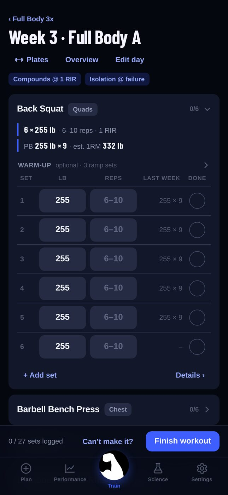
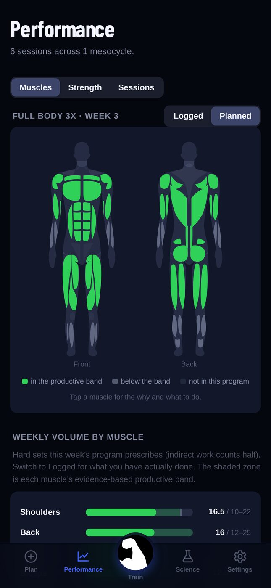
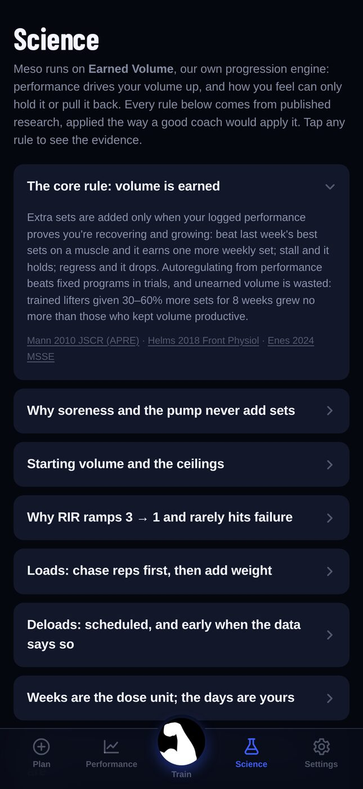

Meso reads what you actually lifted and writes next week from it. Beat last week and it adds a set. Stall and it holds. Every rule comes from published research, and the papers are in the app.
Coming to the App Store · iPhone · works offline, no account

Coverage
Every muscle is measured against the weekly volume the research supports, so an under-worked muscle is obvious at a glance rather than a surprise eight weeks later. Tap one and the app explains why it is the colour it is and what would change it.

Evidence
Other apps say science-based. Meso shows the papers: each rule the engine follows is written in plain language with its citations, in the app, where you can read them mid-session if you want to.
How it decides
Anywhere
Barbells, machines and cables, with plate maths and warm-up ramps built in.
Programs that need a floor, a wall and a sturdy table. Same engine, different lever.
Calisthenics progressions that advance the movement when you top the rep window. Log vest weight and it switches to load progression.